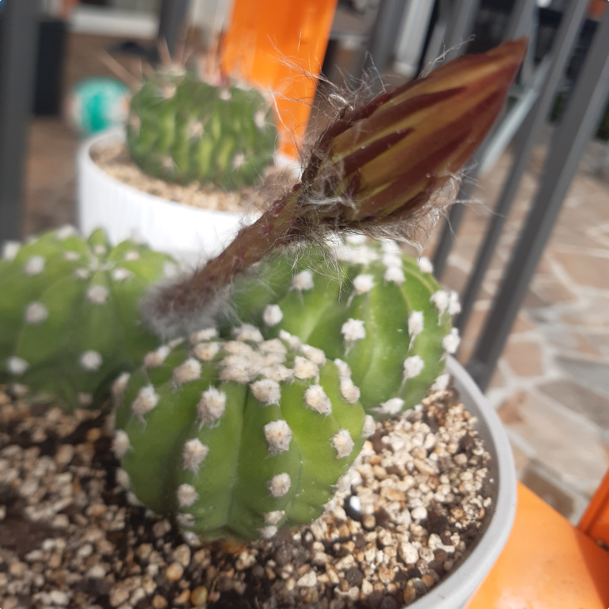
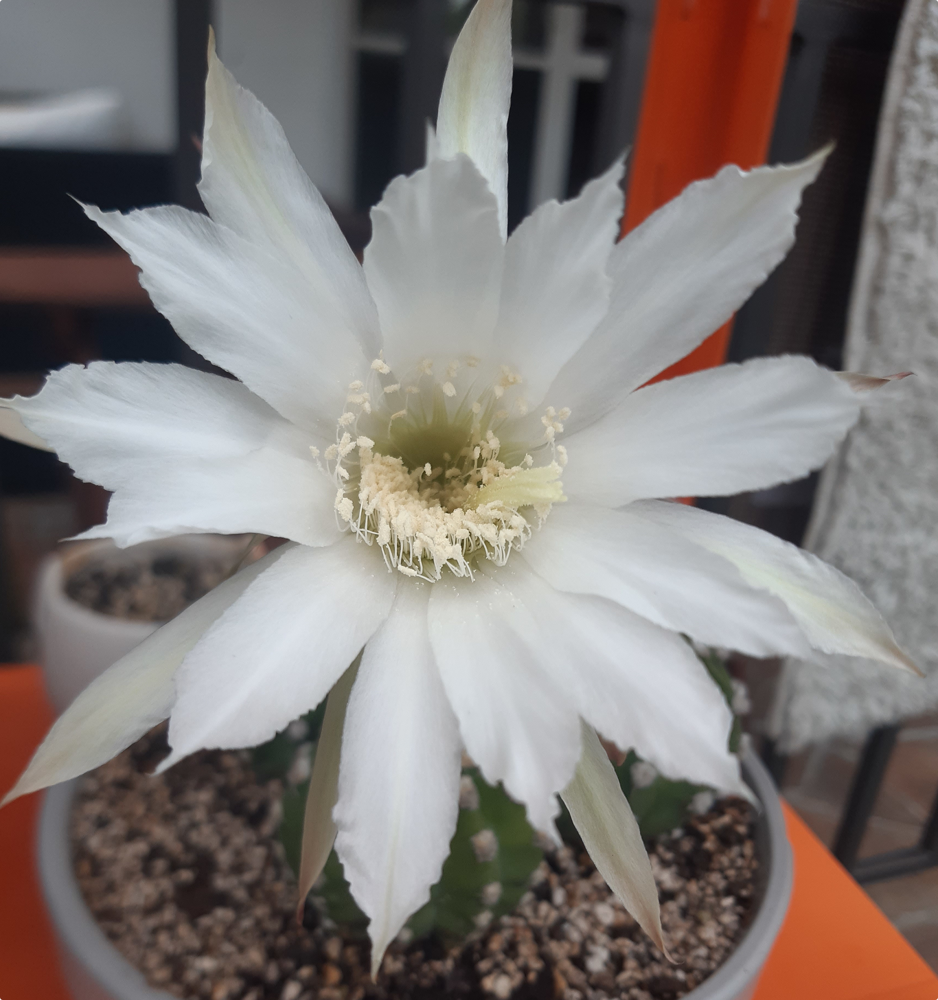
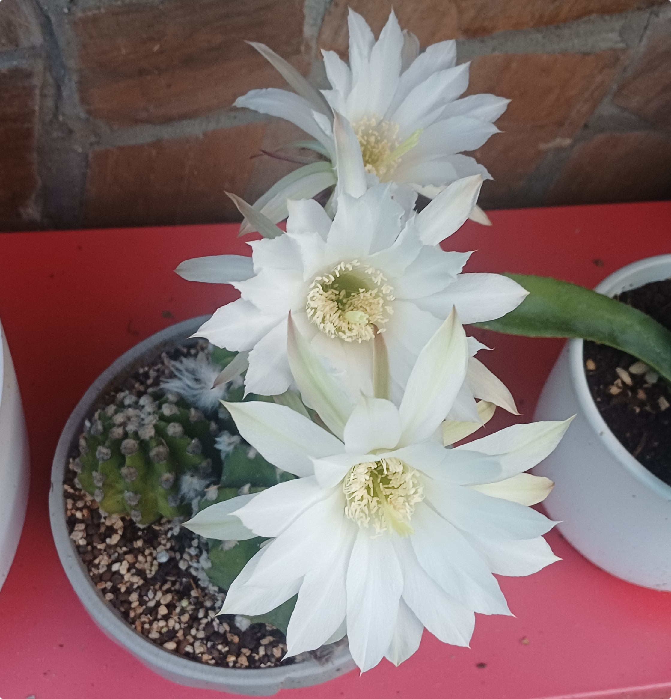
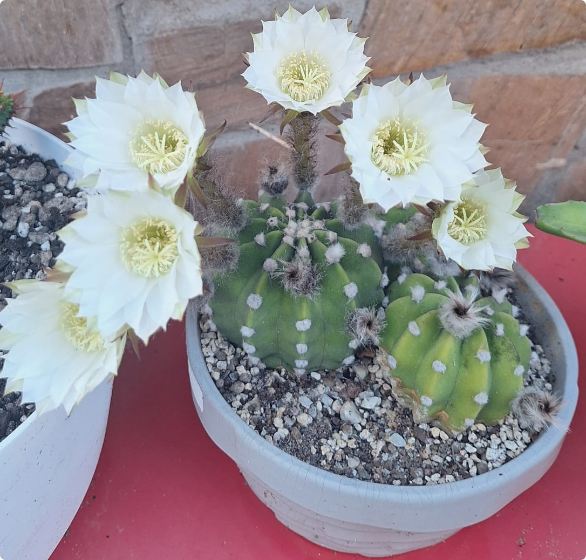

Nazwa zwyczajowa: kaktus lilii wielkanocnej
Rodzina: Cactaceae
🌍 Występowanie
Pochodzi z Boliwii i Paragwaju, gdzie rośnie na górskich zboczach i terenach skalistych. Obecnie szeroko rozpowszechniony w uprawie kolekcjonerskiej.
🌱 Opis morfologiczny
- Kształt: kulisty, z czasem lekko wydłużony
- Średnica: 8–12 cm
- Żebra: 8–15, zaokrąglone, z wyraźnymi guzkami
- Otoczki: białe, wełniste, z niewielkimi, bladymi kolcami (często nieobecnymi u dorosłych okazów)
- Wzrost: samotny, z tendencją do tworzenia odrostów u podstawy
🌸 Kwiaty
- Duże, lejkowate, promieniste
- Kolor: najczęściej biały
- Zapach: delikatny, przyjemny
- Czas kwitnienia: nocą, zazwyczaj wiosną lub latem
- Trwałość: 1–2 dni
🍒 Owoce i rozmnażanie
- Owoce: jagody
- Rozmnażanie: przez nasiona lub oddzielanie odrostów
🌞 Wymagania uprawowe
- Światło: pełne słońce
- Podłoże: przepuszczalne, piaszczysto-gliniaste, lekko kwaśne
- Podlewanie: umiarkowane, z przerwą zimową
- Temperatura zimą: chłodne pomieszczenie (ok. 10°C)
- Nawożenie: 2–3 razy w sezonie wegetacyjnym, nawozem do kaktusów
🏆 Ciekawostki
Ze względu na łatwość uprawy i efektowne kwitnienie, Echinopsis subdenudata jest polecany początkującym kolekcjonerom. Jego kwiaty otwierają się nocą, co czyni go wyjątkowym wśród kaktusów.
📷 Zdjęcia z prywatnej kolekcji
Prezentowane poniżej fotografie pochodzą z prywatnych zbiorów...



